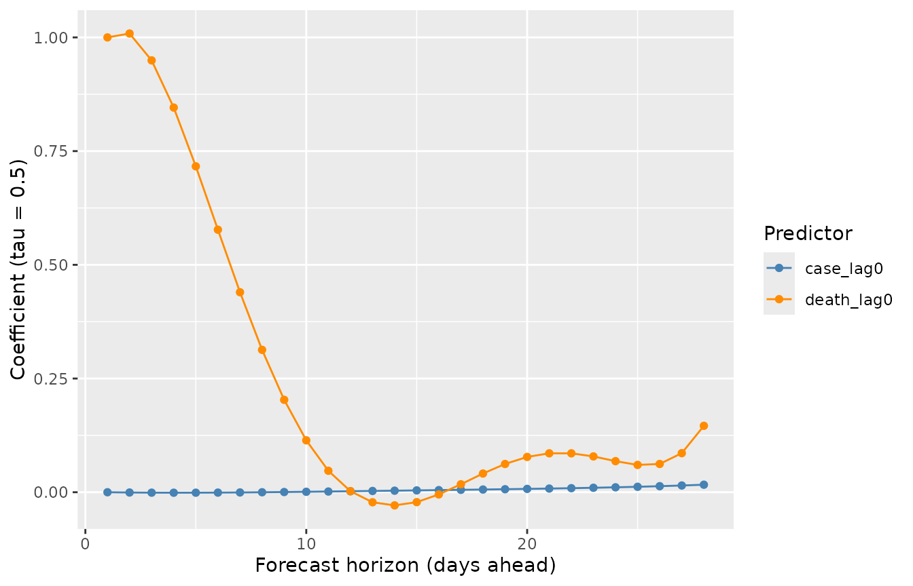
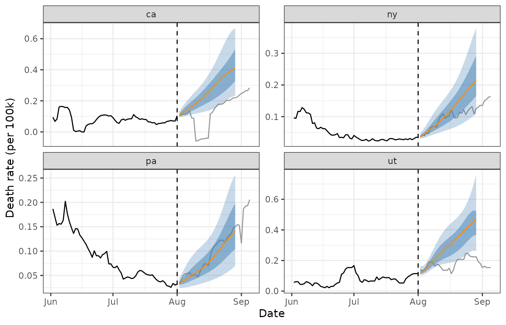

Data
This vignette demonstrates smooth_qr() on the
covid_case_death_rates data from the epidatasets
package. The data contain daily COVID-19 case and death rates (per
100,000 people) for 56 US states/territories.
`%nin%` <- Negate(`%in%`)
covid_case_death_rates <- covid_case_death_rates |>
filter(geo_value %nin% c("as", "gu", "mp", "vi")) |>
select(geo_value, time_value, case_rate, death_rate)
range(covid_case_death_rates$time_value)
#> [1] "2020-12-31" "2021-12-31"
n_distinct(covid_case_death_rates$geo_value) # includes 50 states, DC, and PR
#> [1] 52We’ll forecast future death rates using past case and death rates as
predictors, treating 2021-08-01 as the forecast date – the
date on which the forecaster is standing and producing predictions for
future days.
forecast_date <- ymd("2021-08-01")Building features
smooth_qr() expects a predictor matrix x
and a response matrix y, where each column of
y corresponds to a different forecast horizon (“ahead”). We
use [lagmat()] to build lagged predictors (case and death rates observed
0, 7, and 14 days before the current time) and led responses (death
rates 7, 14, 21, and 28 days ahead), separately for each location, then
stack the results.
aheads <- 1:28 # days ahead to forecast death_rate
lags <- c(0, 1, 2, 7, 14) # lags (days back) used as predictors
# lagmat() must be called with the full set of shifts at once so that the
# lag and lead columns stay aligned to the same set of rows.
all_shifts <- c(-aheads, lags)
mld <- max(aheads)
mlg <- max(lags)
build_design <- function(df) {
df <- df |> arrange(time_value)
case_full <- lagmat(df$case_rate, all_shifts)
death_full <- lagmat(df$death_rate, all_shifts)
colnames(case_full) <- paste0("case_", colnames(case_full))
colnames(death_full) <- paste0("death_", colnames(death_full))
time_padded <- c(rep(as.Date(NA), mld), df$time_value, rep(as.Date(NA), mlg))
bind_cols(
time_value = time_padded,
as_tibble(case_full),
as_tibble(death_full)
)
}
design <- covid_case_death_rates |>
as_tibble() |>
group_by(geo_value) |>
group_modify(~ build_design(.x)) |>
ungroup() |>
filter(!is.na(time_value)) |>
select(!starts_with("case_ahead"))
design
#> # A tibble: 19,032 × 40
#> geo_value time_value case_lag0 case_lag1 case_lag2 case_lag7 case_lag14
#> <chr> <date> <dbl> <dbl> <dbl> <dbl> <dbl>
#> 1 ak 2020-12-31 35.9 NA NA NA NA
#> 2 ak 2021-01-01 35.9 35.9 NA NA NA
#> 3 ak 2021-01-02 43.0 35.9 35.9 NA NA
#> 4 ak 2021-01-03 42.2 43.0 35.9 NA NA
#> 5 ak 2021-01-04 44.4 42.2 43.0 NA NA
#> 6 ak 2021-01-05 44.4 44.4 42.2 NA NA
#> 7 ak 2021-01-06 43.7 44.4 44.4 NA NA
#> 8 ak 2021-01-07 41.5 43.7 44.4 35.9 NA
#> 9 ak 2021-01-08 49.2 41.5 43.7 35.9 NA
#> 10 ak 2021-01-09 41.0 49.2 41.5 43.0 NA
#> # ℹ 19,022 more rows
#> # ℹ 33 more variables: death_ahead28 <dbl>, death_ahead27 <dbl>,
#> # death_ahead26 <dbl>, death_ahead25 <dbl>, death_ahead24 <dbl>,
#> # death_ahead23 <dbl>, death_ahead22 <dbl>, death_ahead21 <dbl>,
#> # death_ahead20 <dbl>, death_ahead19 <dbl>, death_ahead18 <dbl>,
#> # death_ahead17 <dbl>, death_ahead16 <dbl>, death_ahead15 <dbl>,
#> # death_ahead14 <dbl>, death_ahead13 <dbl>, death_ahead12 <dbl>, …Fitting the model
We fit on all data up to 30 days before the forecast date, using
complete cases only (smooth_qr() drops incomplete rows
automatically).
train <- design |>
filter(between(time_value, forecast_date - 30, forecast_date))
x_train <- train |> select(contains("lag")) |> as.matrix()
y_train <- train |> select(contains("ahead")) |> as.matrix()
fit <- smooth_qr(
x_train,
y_train,
tau = c(.1, .25, .5, .75, .9),
degree = 6L,
aheads = aheads
)
fit
#>
#> Call: smooth_qr(x = x_train, y = y_train, tau = c(0.1, 0.25, 0.5, 0.75,
#> 0.9), degree = 6L, aheads = aheads)
#>
#> Degree: 6
#> tau: 0.1 0.25 0.5 0.75 0.9
#>
#> aheads: 1 2 3 4 5 6 7 8 9 10 11 12 13 14 15 16 17 18 19 20 21 22 23 24 25 26
#> 27 28
#>
#> Coefficients:
#> # A tibble: 308 × 6
#> response `tau = 0.1` `tau = 0.25` `tau = 0.5` `tau = 0.75` `tau = 0.9`
#> <chr> <dbl> <dbl> <dbl> <dbl> <dbl>
#> 1 death_ahead28 -0.0236 -0.0215 -0.0127 0.0159 0.0228
#> 2 death_ahead28 0.00621 0.0121 0.0165 0.0249 0.0233
#> 3 death_ahead28 0.00328 0.00404 0.00183 0.00354 0.0115
#> 4 death_ahead28 0.00251 0.00172 0.00599 -0.00298 0.00254
#> 5 death_ahead28 -0.00224 -0.00510 -0.00954 -0.00101 -0.0117
#> 6 death_ahead28 -0.00255 -0.00289 -0.00461 -0.0133 -0.00779
#> 7 death_ahead28 0.148 0.126 0.146 0.0918 0.0395
#> 8 death_ahead28 -0.0149 0.0466 0.0121 0.0223 0.0337
#> 9 death_ahead28 -0.00630 -0.0724 0.115 0.0832 0.0458
#> 10 death_ahead28 0.408 0.475 0.389 0.493 0.502
#> # ℹ 298 more rowsSmoothed coefficients across aheads
The central idea behind smooth_qr() is that the
predictions for neighbouring forecast horizons should vary smoothly,
rather than being estimated independently. This is controlled by
enforcing smoothness on the coefficients. We can see this by extracting
the coefficients on the response scale with coef() and
examining how a single predictor’s coefficient evolves across
aheads.
cc <- coef(fit, type = "response")
coef_df <- bind_rows(
lapply(names(cc), function(nm) {
as_tibble(cc[[nm]], rownames = "predictor") |> mutate(response = nm)
})
) |>
mutate(ahead = as.numeric(gsub("death_ahead", "", response)))
coef_df |>
filter(predictor %in% c("case_lag0", "death_lag0")) |>
ggplot(aes(ahead, `tau = 0.5`, color = predictor)) +
geom_line() +
geom_point() +
scale_colour_manual(
values = c("case_lag0" = "steelblue", "death_lag0" = "darkorange")
) +
labs(
x = "Forecast horizon (days ahead)",
y = "Coefficient (tau = 0.5)",
color = "Predictor"
)
Predicting
To forecast forward from forecast_date, we use each
location’s predictor values observed as of that date.
newdata <- design |>
filter(time_value == forecast_date) |>
select(geo_value, contains("lag"))
preds <- predict(fit, newdata = newdata |> select(-geo_value))
preds_tbl <- bind_rows(
lapply(names(preds), function(nm) {
as_tibble(preds[[nm]]) |>
mutate(geo_value = newdata$geo_value, response = nm)
})
) |>
pivot_longer(starts_with("tau"), names_to = "tau", values_to = "value") |>
mutate(
ahead = as.numeric(gsub("death_ahead", "", response)),
target_date = forecast_date + ahead,
tau = as.numeric(gsub("tau = ", "", tau))
)
preds_tbl
#> # A tibble: 7,280 × 6
#> geo_value response tau value ahead target_date
#> <chr> <chr> <dbl> <dbl> <dbl> <date>
#> 1 ak death_ahead28 0.1 0.316 28 2021-08-29
#> 2 ak death_ahead28 0.25 0.427 28 2021-08-29
#> 3 ak death_ahead28 0.5 0.526 28 2021-08-29
#> 4 ak death_ahead28 0.75 0.686 28 2021-08-29
#> 5 ak death_ahead28 0.9 0.874 28 2021-08-29
#> 6 al death_ahead28 0.1 0.478 28 2021-08-29
#> 7 al death_ahead28 0.25 0.694 28 2021-08-29
#> 8 al death_ahead28 0.5 0.797 28 2021-08-29
#> 9 al death_ahead28 0.75 1.16 28 2021-08-29
#> 10 al death_ahead28 0.9 1.41 28 2021-08-29
#> # ℹ 7,270 more rowsVisualizing a few locations
We compare the forecast distributions for California, New York, Pennsylvania, and Utah against the death rates that were subsequently observed.
geo_focus <- c("ca", "ny", "pa", "ut")
actual <- covid_case_death_rates |>
as_tibble() |>
filter(
geo_value %in% geo_focus,
time_value >= forecast_date - 60,
time_value <= forecast_date + 35
)
pred_wide <- preds_tbl |>
filter(geo_value %in% geo_focus) |>
pivot_wider(
id_cols = c(geo_value, response, ahead, target_date),
names_from = tau,
values_from = value,
names_prefix = "q"
)
ggplot() +
geom_line(
data = actual |> filter(time_value <= forecast_date),
aes(time_value, death_rate)
) +
geom_line(
data = actual |> filter(time_value > forecast_date),
aes(time_value, death_rate),
colour = "grey60"
) +
geom_ribbon(
data = pred_wide,
aes(x = target_date, ymin = q0.1, ymax = q0.9),
alpha = 0.3,
fill = "steelblue"
) +
geom_ribbon(
data = pred_wide,
aes(x = target_date, ymin = q0.25, ymax = q0.75),
alpha = 0.5,
fill = "steelblue"
) +
geom_line(data = pred_wide, aes(target_date, q0.5), color = "darkorange") +
facet_wrap(~geo_value, scales = "free_y") +
geom_vline(xintercept = forecast_date, linetype = 2) +
labs(
x = "Date",
y = "Death rate (per 100k)"
) +
theme_bw()
Note that observed death rate in California just after the forecast date shows a data irregularity (a brief dip below zero), which is a known reporting artifact in this dataset rather than a reflection of real negative deaths.